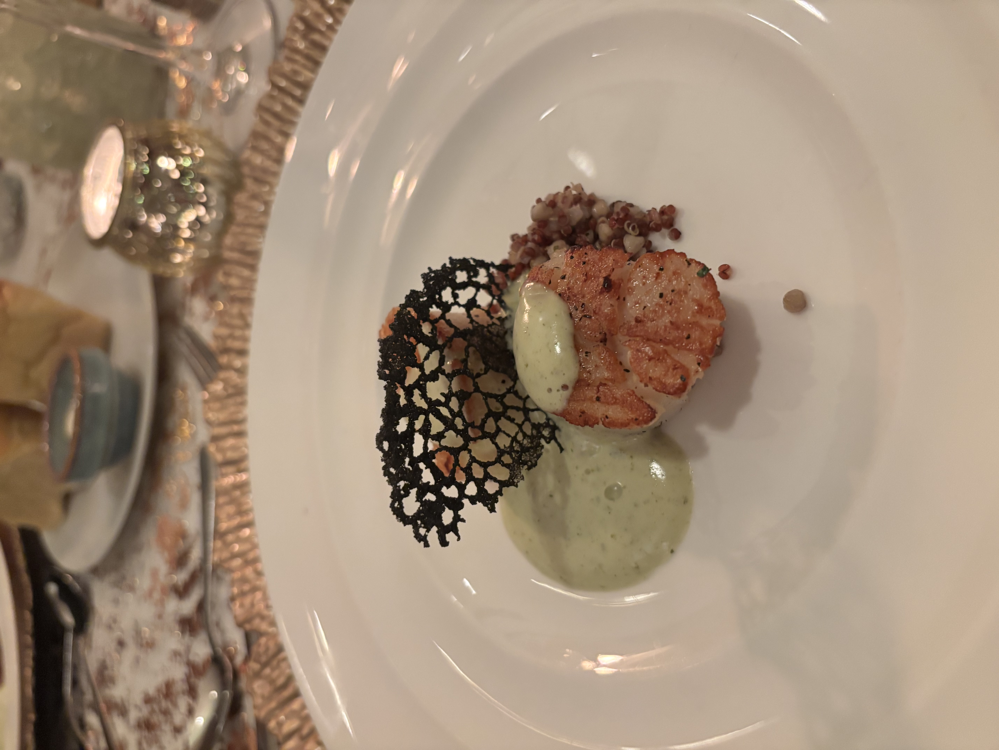
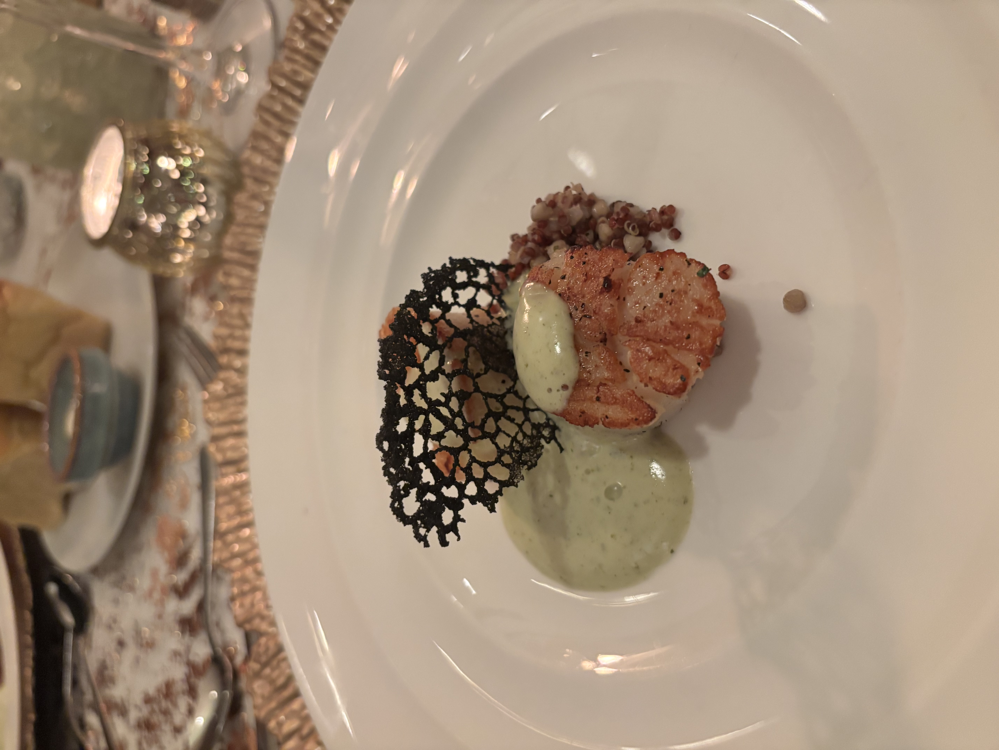
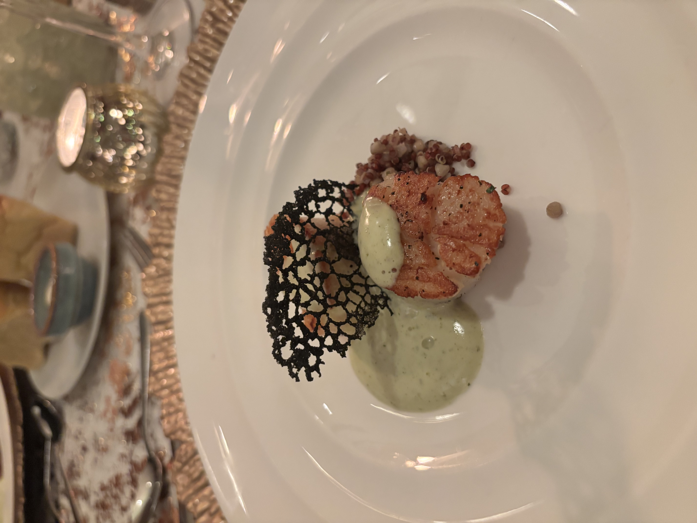
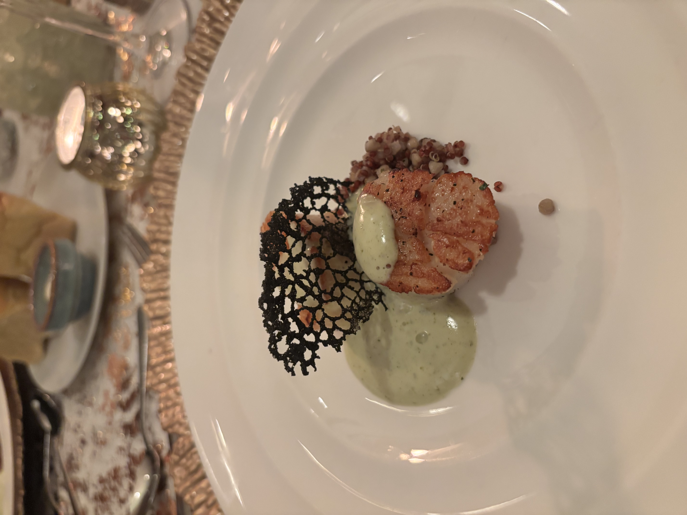
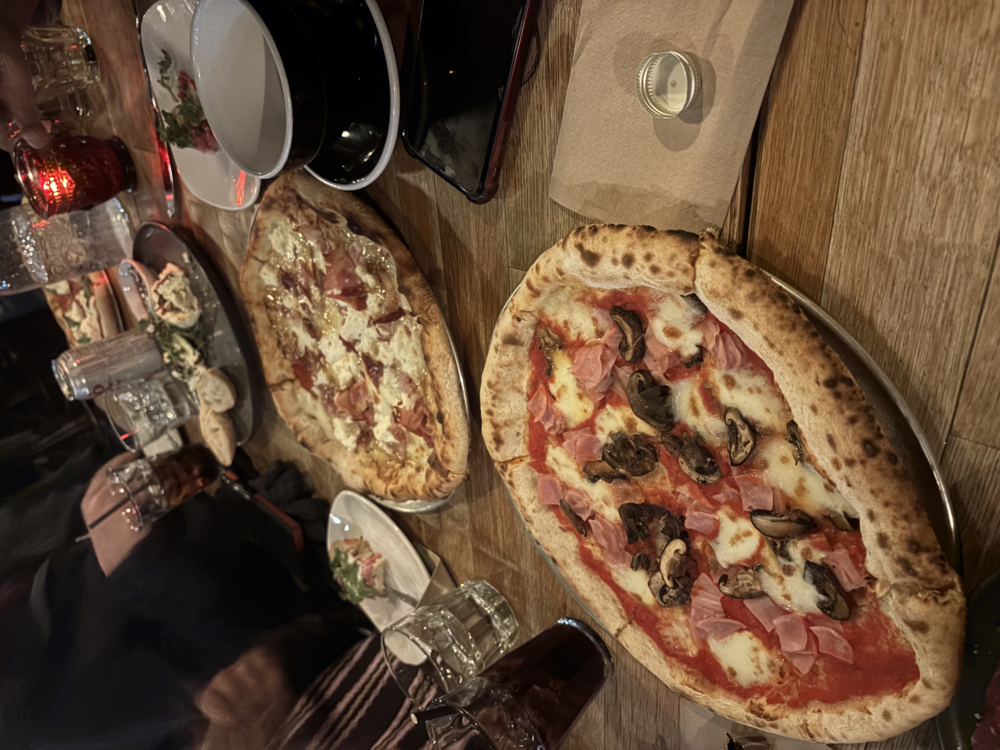
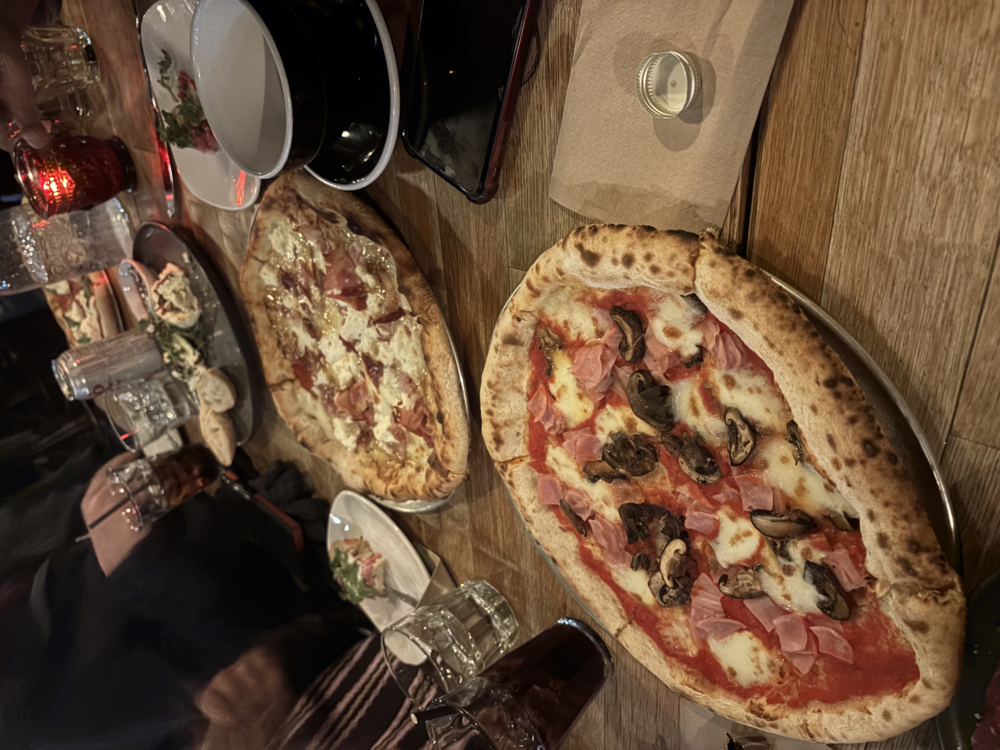
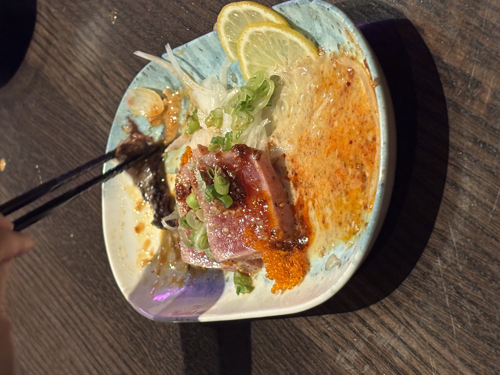
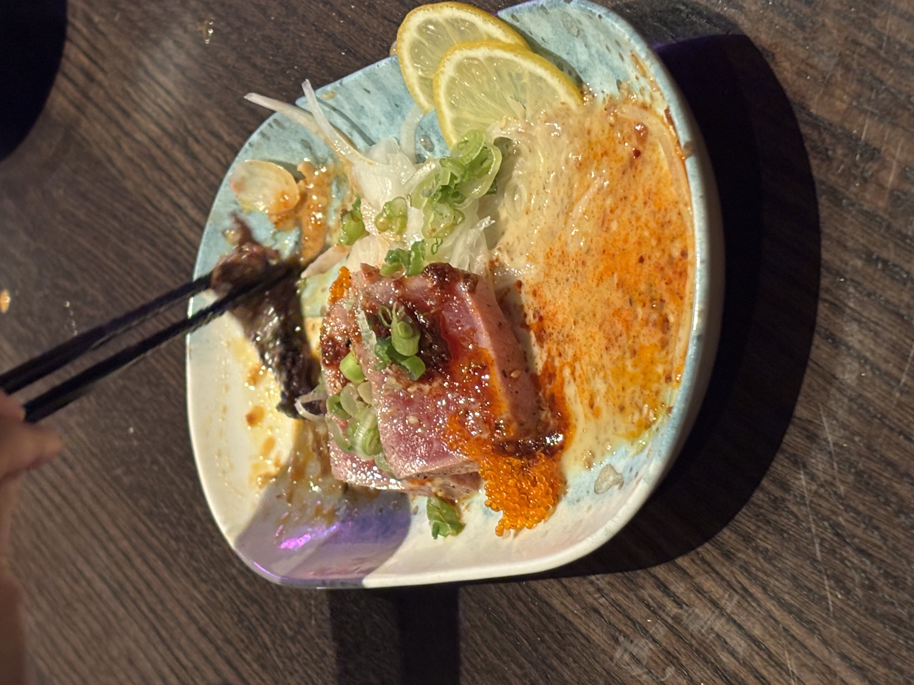

 

My Name is Anna Kibria, Welcome to Anna Eats, your go-to guide for discovering the best (and occasionally the not-so-best) food spots around Edmonton. Here, you’ll find honest reviews that break down the food, atmosphere, and overall experience. Each restaurant I visit is also pinned on an interactive map, so you can easily see where I’ve been, and where you should go. If you love good food, supporting local spots, and finding your next favorite place to eat, you’re in the right place. Welcome to Anna Eats...let’s eat our way through Edmonton together.
 

Rossos is a standout spot for Italian food in Edmonton, offering a menu that feels both creative and thoughtfully put together. One of the highlights of the meal was the Dolce Emma pizza, which was absolutely fantastic. The balance of flavors worked beautifully, making it one of those pizzas you keep thinking about MONTHS after the meal is over. The truffle beef tartare had great flavor, but the portion felt off there was noticeably more tartare than bread, which made it harder to enjoy. The Burrata di Noah was another strong dish. The creamy burrata paired perfectly with the fig jam, and the pistachios added a nice crunch and depth that tied everything together really well. In contrast, the Burrata di Simona was a bit underwhelming. While still fresh, it lacked the bold flavor and balance found in the other dishes and came across as slightly bland. Rossos has a dim, perfectly Italian vibe that makes it feel authentic, setting the mood for a fun night of great pizza and shared plates with friends. Overall, Rossos delivers a memorable dining experience with some standout dishes and a few that could use minor tweaks. It’s definitely worth visiting, especially if you’re in the mood for elevated Italian flavors done right.


The Fairmont Hotel Macdonald hosted a 5 course New years Eve Dinner and dance, starting off with caviar on a Potato belini, a small course which I found a little bland but overall a good beginning. The first official course was The scallops, they were incredible. The chive foam along with Smoked buckwheat and quinoa paired lovely with the scallops definitely my faviourite course of the 5. Second course was the Confit Game Hen Lollipop this came with a cabbage roll whos acidity paired very well with the juicyt Lollipop. The third course was the main, I chose a Beef Rossini. This came with a Fois Gras, mashed potato, Kennebec Croquette and other elements. The beef was cooked perfect, and was a lovely main. Then the two desserts was a Black & Gold chocolate sphere and Petite Fours. I found the spheres to be too large as I struggled to eat half of it with how sweet and rich the mousse inside was. While the petite Fours were very lovely and delicate. Overall this dinner was a great experience, I only found the portion sizes to be a bit much as when i got to the third course I was already quite full.

 



Dorinku offers a welcoming atmosphere that makes for a really enjoyable dining experience. The music was at a comfortable volume and the decorations were thoughtfully put together, giving the space a polished yet relaxed vibe that’s perfect for a casual night out. The standout of the meal was definitely the pressed sushi, which was incredibly well done and a great bang for your buck. Dorinku is on the more affordable side when it comes to sushi, making it an excellent option if you’re looking for quality without the high price tag. The TNT pressed sushi was by far my favourite, packed with flavour and easily the highlight of the meal. The enoki mushrooms were slightly bland and a little difficult to eat but the tuna tataki more than made up for it. The sauce was amazing: super creamy, rich, and everything you want in a tataki. It elevated the dish and left a lasting impression. Overall, Dorinku delivers great value, solid sushi, and a comfortable atmosphere, making it a spot I’d definitely return to, especially for the pressed sushi.
Tansen Izakaya is definitely one of my go to spots, especially because it’s super close to the university, very affordable, and offers fantastic service. It’s the kind of place that’s easy to pop into for a quick meal without breaking the bank. While it isn’t necessarily a standout destination overall, there were a few highs and lows. The sashimi platter was a bit disappointing, as the fish felt slightly frozen, which took away from the texture and freshness. That said, the value and comfort of the restaurant make up for it in other ways. One absolute must-try is the $5 ramen, which is hard to beat for the price and perfect for a quick, satisfying meal. The real reason I keep coming back, though, is the pressed sushi. Tansen does it really well, with an excellent rice-to-fish ratio and bold, consistent flavour. The hamachi oshi sushi with truffly mayo is a standout — rich, flavourful, and always hits the spot. Overall, Tansen Izakaya is a reliable, affordable option with great service and some strong menu items that make it worth returning to, especially for the pressed sushi and unbeatable value.